操作系统笔记
PS：==考试时若PPT和教材发生冲突 以老师的材料或者是PPT为准==
操作系统的基本概念
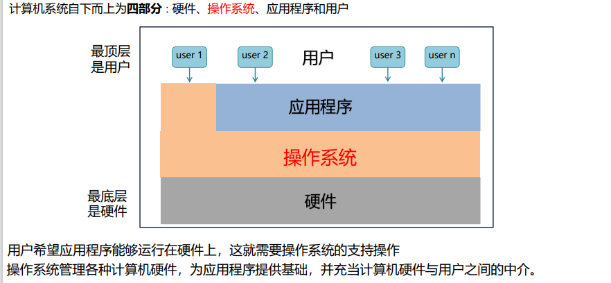
操作系统作为计算机最底层的软件，时应用程序运行的基本支撑环境，不可或缺
定义
操作系统（Operating System, OS)是 ① 计算机系统中最基本的系统软件。 ② 控制和管理整个计算机系统的硬件和软件资源，合理的组织、调度计算机的工作和资源的分配， ③ 进而为用户和其他软件提供方便接口与环境的程序集合。
操作系统给应用程序提供：系统调用 操作系统给用户提供： Ø 用户接口：命令行接口，图形接口 Ø 系统程序：管理、维护操作系统的程序，如任务管理器、控制面板等
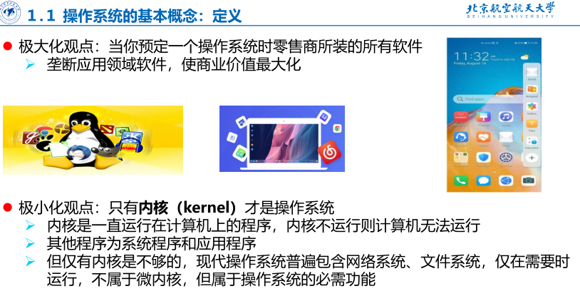
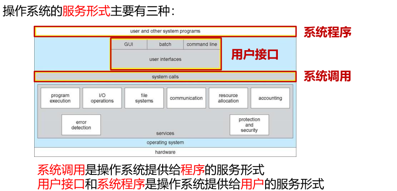
目标
功能
功能一：作为计算机系统中最基本的系统软件，实现对计算机资源的抽象
功能二：作为系统资源的管理者，实现处理机管理、存储器管理、文件管理和I/O设备管理
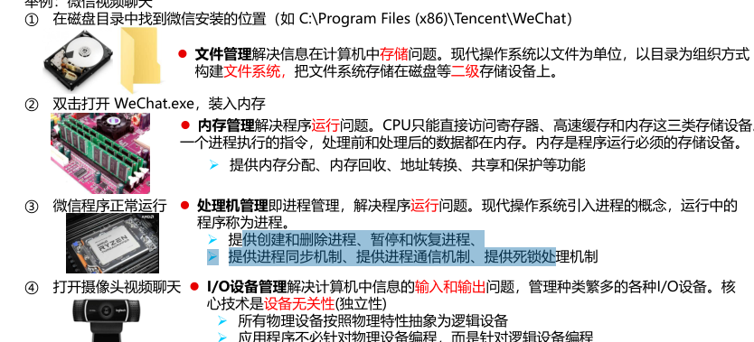
功能三：作为作为用户与计算机硬件系统之间的接口，提供用户接口和程序接口
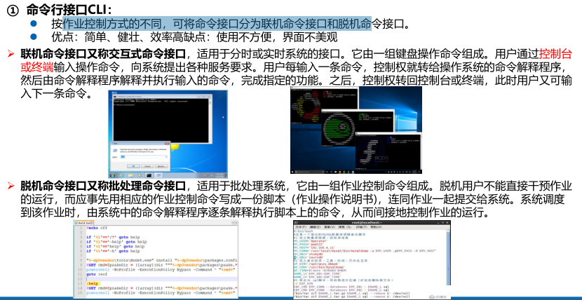
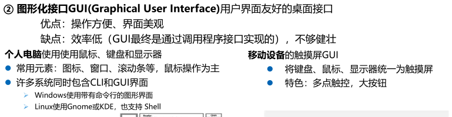
③程序接口：程序接口由一组系统调用组成。 应用程序通过系统调用请求操作系统的服务。而系统中的各种共享资源都由操作系统内核统一掌管，因此凡是与共享 资源有关的操作（如存储分配、I/O操作、文件管理等），都必须通过系统调用的方式向操作系统内核提出服务请求， 由操作系统内核代为完成。这样可以保证系统的稳定性和安全性，防止用户进行非法操作。
特征
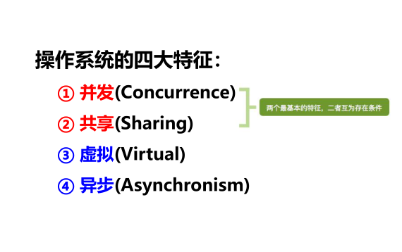
并发
并发(Concurrence)，计算机系统中同时运行多个程序
注意并发是指两个或多个事件在同一事件间隔内发生，不等于并行
操作系统的并发性是通过分时得以实现的：在多道程序环境下，一段时间内，宏观上有多道程序在同时执行，而在 每个时刻，单处理机环境下实际仅能有一道程序执行，因此微观上这些程序仍是分时交替执行的。 并行性是指系统具有同时进行运算或操作的特性，在同一时刻能完成两种或两种以上的工作。并行性需要有相关硬件的支持，如多流水线或多处理机硬件环境。 Ø 单核CPU同一时刻只能执行一个程序，各个进程只能并发地执行 Ø 多核CPU同一时刻可以同时执行多个程序，多个进程可以并行地执行
共享
互斥共享
资源虽然可以提供给多个进程使用，但应规定在一段时间内只允许一个进程访问该资源。 Ø临界资源：在一段时间内只允许一个进程访问的资源称为临界资源。计算机系统中的大多数物理设备及某些软件中所用的栈、变量和表，都属于临界资源，它们都要求被互斥地共享
同时访问
虚拟
虚拟(Virtual)，使用虚拟技术来实现虚拟处理器、虚拟内存和虚拟外部设备等
虚拟是指把一个物理上的实体变为若干逻辑上的对应物。 操作系统中利用了多种虚拟技术来实现虚拟处理器、虚拟内存和虚拟外部设备等： 虚拟处理器：通过多道程序设计技术，采用让多道程序并发执行的方法，来分时使用一个处理器的。此时，虽然只有一个处理器，但它能同时为多个用户服务，使每个终端用户都感觉有一个中央处理器（CPU）在专门为它服务。利用多道程序设计技术把一个物理上的CPU虚拟为多个逻辑上的CPU。 虚拟存储器：采用虚拟存储器技术将一台机器的物理存储器变为虚拟存储器，以便从逻辑上扩充存储器的容量。当然，这时用户所感觉到的内存容量是虚的。 虚拟I/O设备：将一台物理I/O设备虚拟为多台逻辑上的I/O设备，并允许每个用户占用一台逻辑上的 I/O 设备，使原来仅允许在一段时间内由一个用户访问的设备（即临界资源）变为在一段时间内允许多个用户同时访问的共享设备。 操作系统的虚拟技术可归纳为∶
- 时分复用技术，如虚拟处理器，虚拟I/O设备
- 空分复用技术，如虚拟存储器
异步
特征四：异步(Asynchronism)，进程的执行以不可预知的速度向前推进 在多道程序环境下，允许多个程序并发执行，但由于资源有限，进程的执行不是一贯到底的，而是走走停停，以不可预知的速度向前推进，这就是进程的异步性
操作系统的发展与分类
分类
- 实时操作系统
- PC操作系统
- 嵌入式操作系统
- 移动操作系统
- 网络操作系统
- 布式操作系统
实时操作系统
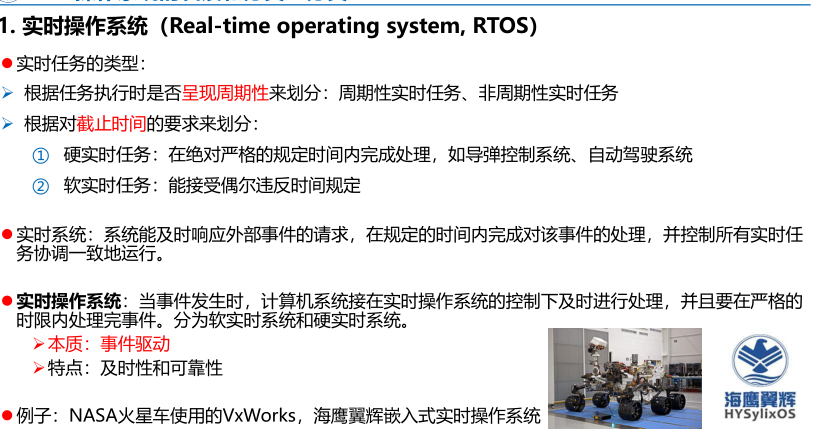
网络操作系统
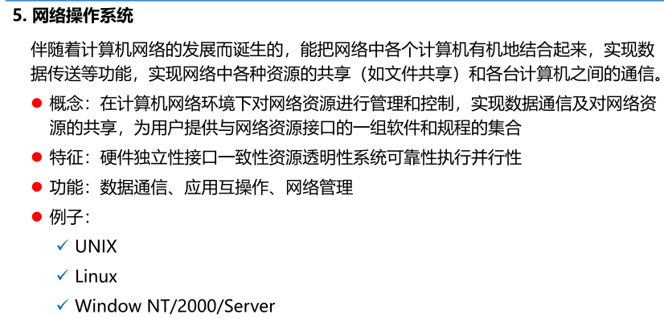
分布式操作系统
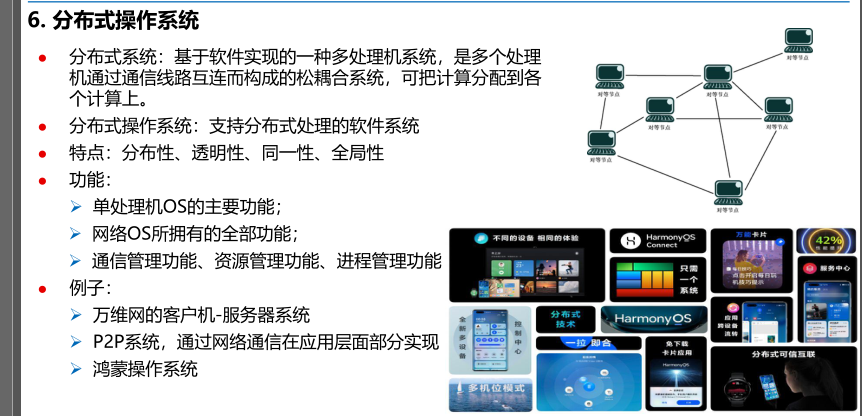
总结
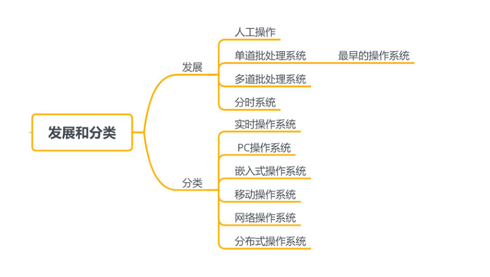
程序运行环境（重点）
中断和异常
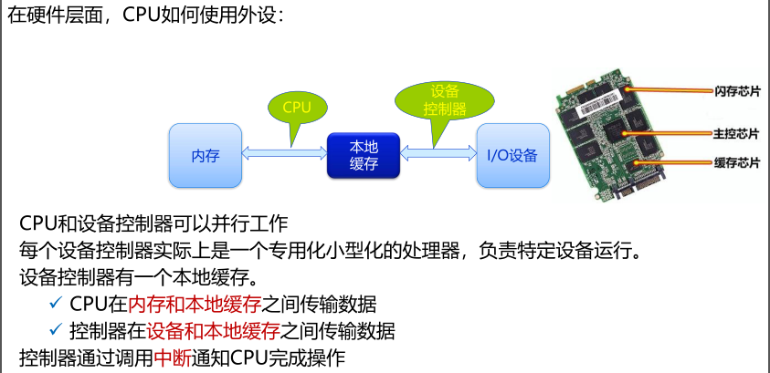
现代操作系统的一个显著特点：中断驱动
以读磁盘为例
- CPU发出I/O指令，通过总 线传输到磁盘控制器。之后 CPU可执行其他进程的指令
- 磁盘控制器在收到指令后， 控制磁盘执行命令
- 磁盘把数据传输到控制器的 本地缓存
- 磁盘控制器触发中断，通知 CPU数据已经读完
- CPU响应中断，把数据从本地缓存复制到内存
- 循环直至数据读取完毕
中断
中断处理：当出现需要时，CPU暂时停止当前程序的执行，转而执行处理新情况的中断处理程序。当执行完中断处理程序后，重新从刚才停下的位置继续当前进程的运行。 中断号：为了区分不同的中断，每个设备有自己的中断号、系统有0-255一共256个中断。系统有一张中断向量表，用于存放256个中断的中断服务程序入口地址。每个入口地址对应一段代码，即中断服务程序。 中断向量：中断服务程序的入口地址 中断服务程序：内核程序中执行中断处理的代码 中断向量表：不同的中断信号，需要用不同的中断处理程序来处理。当CPU检测到中断信号后，根据中断信号的类型去查询“中断向量表”，以此来找到相应的中断处理程序在内存中的存放位置
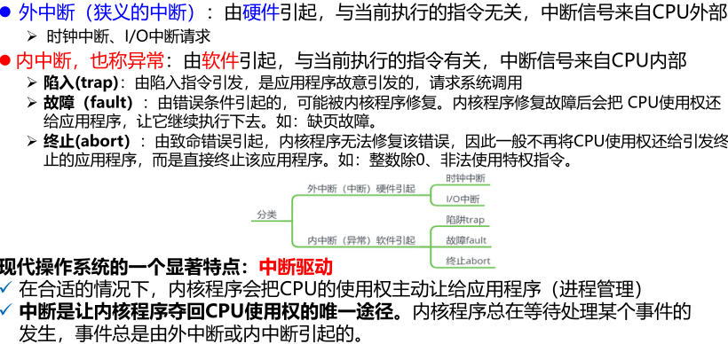
内核程序
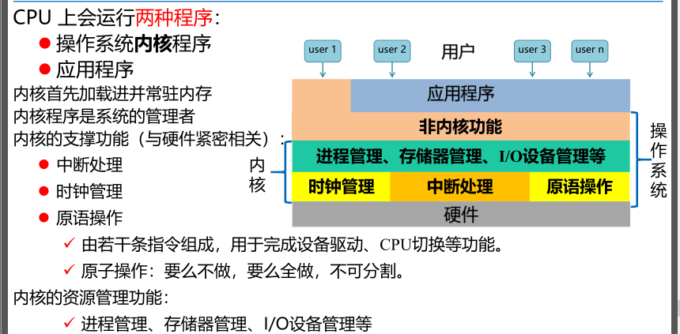
双模式
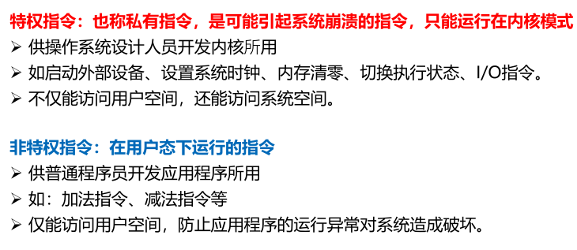
为了保证系统能安全运行，应用程序只能执行非特权指令，运行在用户模式 内核程序是系统的管理者，既可执行特权指令，也可执行非特权指令，运行在内核模式
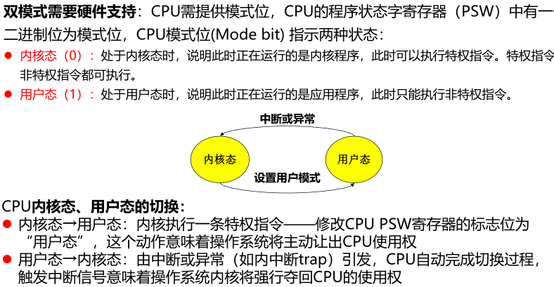
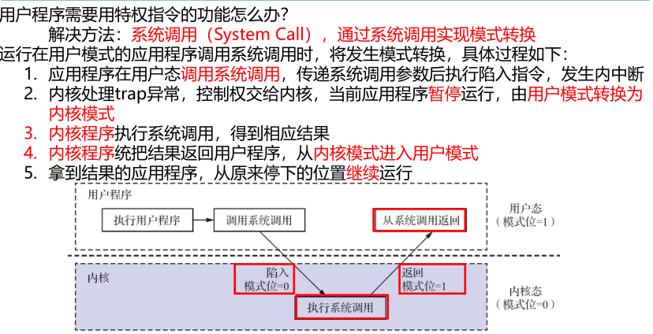
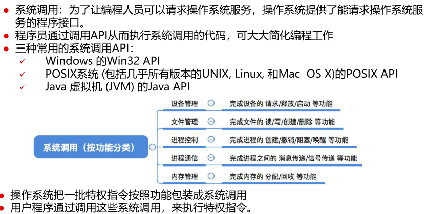
系统调用的过程：
- 应用程序调用open() API时，CPU从用户模式转换为内核模式
- 操作系统根据名称open，查表找到对应的系统调用编号i
- 从系统调用向量表中找到系统调用i的入口地址，执行系统调用代码
- 执行完后，CPU从内核模式转换成用户模式，并将系统调用的结果返回给应用程序
操作系统结构
- 层次结构
- 模块化结构
- 微内核结构
- 宏内核结构
- 外核结构
层次结构
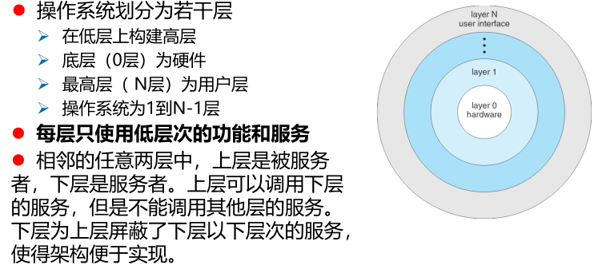
优点 简化了系统设计和实现，便于调试和升级维护 缺点 层定义困难，并不能完成抽象为层次结构 效率低。跨多层调用开销大
Android架构分五层： 系统应用 Java API框架 原生 C/C++ 库与Android运行时 硬件抽象层 (HAL) Linux 内核
模块化结构
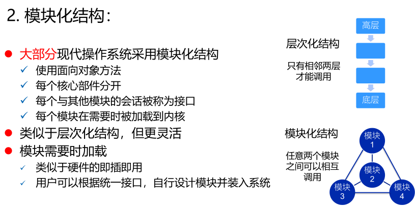
微内核结构
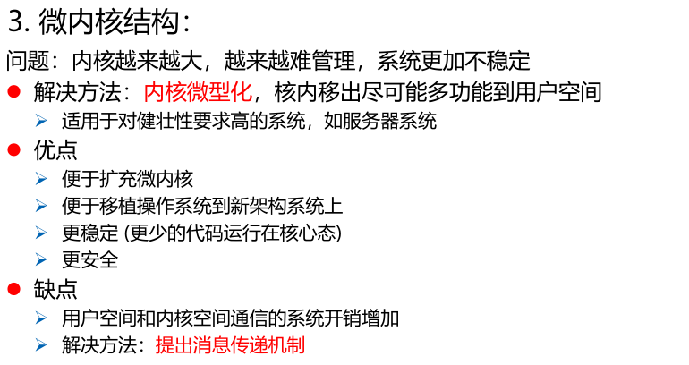
宏内核结构
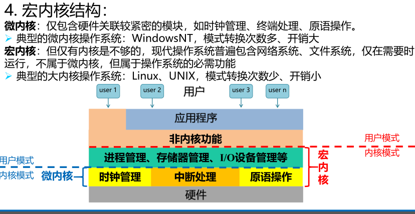
外核结构
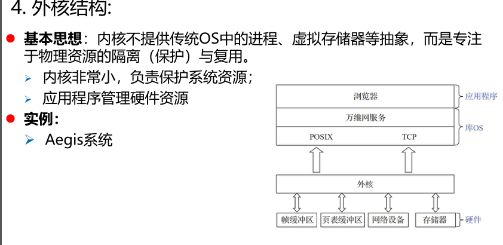
操作系统引导
- 激活cpu
- 硬件自检
- 加载带有草托系统的硬盘
- 加载主引导记录MBR
- 扫描硬盘分区表，并加载硬盘活动分区
- 加载分区并记录PBR
- 加载启动管理器
- 加载操作系统
虚拟机
三类虚拟机： 高级语言虚拟机 JVM 功能：提供代码运行的容器，模拟代码执行 目的：支持代码跨平台运行 工作站虚拟机
宿主操作系统与客户操作系统
建立于操作系统之上，是操作系统中的操作系统（Guest OS） 目的：多个操作系统可以同时在一个计算机上使用
服务器虚拟机 把一个物理计算机虚拟化为多个虚拟机 目的：多用户、多操作系统在一个物理计算机上并存